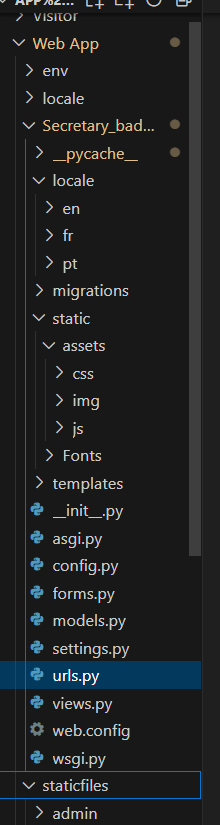

Mise en Production
Les Premiers Problèmes
Avec l'avancement du projet, mon maître de stage et moi avons décidé de commencer à mettre le projet en production pour évaluer le rendu final et identifier les modifications nécessaires une fois sur le serveur.
Cinq problèmes majeurs sont apparus lors de cette mise en production. Le premier concernait le menu d'autocomplétion qui ne s'affichait pas au bon endroit. Ensuite, la génération du QR Code rencontrait une erreur jusqu'alors inconnue, et la partie check-out ne fonctionnait pas correctement, que ce soit pour la caméra ou le scanner de QR Code.
Après quelques recherches, nous avons pu identifier les sources de ces problèmes. Certains fichiers, une fois sur le serveur, devaient être déplacés pour être pris en compte. Cela a nécessité de revoir l'infrastructure des dossiers, ce qui a résolu les problèmes de QR Code et d'autocomplétion.
Suite à cela, d'autres problèmes, plus ou moins importants, ont ralenti mon travail, mais j'ai réussi à les résoudre. En ce qui concerne la caméra qui ne s'affichait pas, nous avons découvert en fin de semaine que le problème provenait du fait que le serveur était en HTTP. De nos jours, HTTP est déconseillé pour des raisons de sécurité, et les navigateurs bloquent l'accès à la caméra et au microphone dans ce cas.
Enfin, un autre problème majeur concernait l'autocomplétion du champ renseignant la personne à visiter. Pour cela, je devais établir une liaison avec Microsoft Teams. J'y ai passé plusieurs jours avec l'aide du support IT qui disposait des accès nécessaires. Cependant, nos efforts ont été vains, et nous envisageons maintenant de trouver un autre moyen de notifier le personnel.
Mon maître de stage n'étant pas disponible lundi, nous avons établi un plan de travail en attendant notre prochaine réunion de suivi le mercredi.